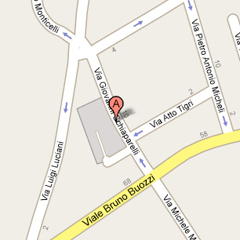
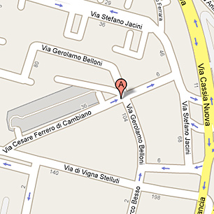

Studio
Via Giovanni Schiaparelli n° 11
Stazione Termini -> Via Schiaparelli - mezzi pubblici
Prendere dalla Stazione Termini la linea 901 (direz Mancini) per 14 fermate, ogni 12 min.
Scendere alla fermata STAZ. EUCLIDE, a piedi per 550 metri fino all'arrivo.

Raccordo Anulare uscita Salario -> Via Schiaparelli - auto
Partenza da roma raccordo salario settebagni,
Svoltare a sinistra in raccordo salario settebagni dopo 150 (m.)
Proseguire per via salaria
Svoltare a destra in viale liegi dopo 9763 (m.)
Svoltare a destra in viale dei parioli dopo 535 (m.)
Svoltare a sinistra in viale gioacchino rossini dopo 115 (m.)
Svoltare a destra in via antonio bertoloni dopo 271 (m.)
Svoltare a sinistra in piazza pitagora dopo 26 (m.)
Proseguire per viale bruno buozzi
Svoltare a destra in via giovanni schiaparelli dopo 681 (m.)
Clinica
ARS MEDICA - Via C. Ferrero di Cambiano n° 29

Stazione Termini -> ARS MEDICA - mezzi pubblici
Prendere la linea METRO A (direzione BATTISTINI) per 5 fermate METRO A ogni 3 min.
Scendere alla fermata Lepanto
Prendere la linea 224 (direzione L.go Sperlonga) per 18 fermate, ogni 20 min.
Scendere alla fermata VIGNA STELLUTI/FRANCIA, a piedi per 250 metri fino all'arrivo.
Rraccordo Anulare uscita 6 per Via Flaminia Nuova -> ARS MEDICA - auto
Dal Raccordo uscita n 6 per via flaminia nuova
Proseguire per via flaminia nuova
Svoltare a sinistra in corso di francia dopo 2535 (m.)
Svoltare a destra in via stefano jacini dopo 40 (m.)
Svoltare a sinistra in largo gerolamo belloni dopo 69 (m.)
Svoltare a destra in via gerolamo belloni dopo 106 (m.)
fino all'arrivo roma via cesare ferrero di cambiano.